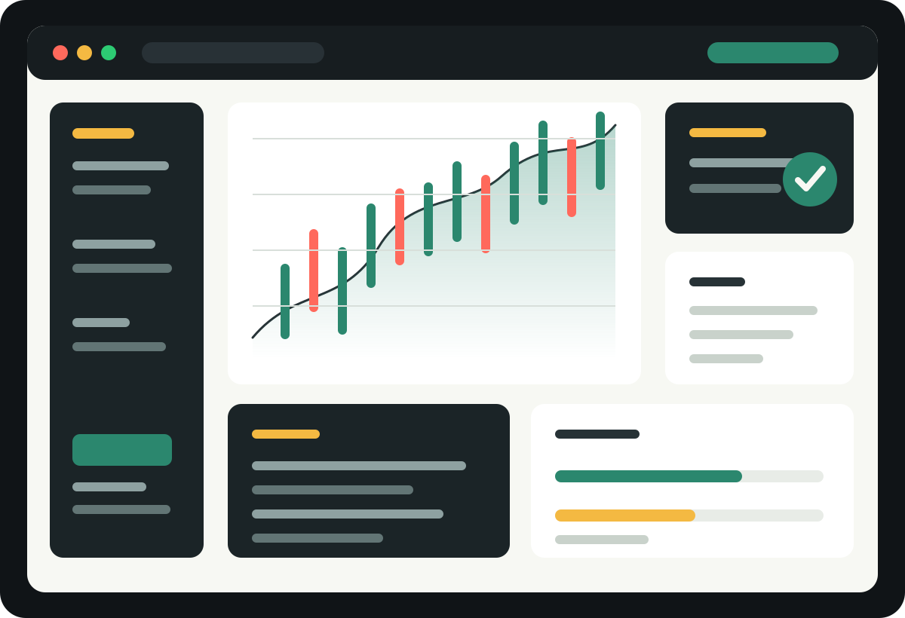

Expert Advisors
Rule-based bots, signal execution, position management, trailing stops, grid logic, martingale controls, and news filters.
MQL5 automation, trading tools, and production websites
I build Expert Advisors, indicators, dashboards, and broker-ready utilities for MetaTrader 5, then help turn the same business logic into fast websites and reliable deployments.

What I build
Rule-based bots, signal execution, position management, trailing stops, grid logic, martingale controls, and news filters.
Custom chart indicators, multi-timeframe signals, push alerts, buffers, dashboards, and clean visual overlays.
Lot calculators, drawdown guards, session filters, spread checks, trade copiers, and account protection tools.
Selected work
Automation
Configurable entry windows, spread protection, risk-based lot sizing, daily limits, and visual backtest reporting.
Utility
One-click partial closes, break-even actions, trailing presets, basket controls, and account-level safety rules.
Website
Conversion-focused site with docs, pricing sections, checkout handoff, analytics, and deployment to production hosting.
How projects move
Clarify entries, exits, risk model, session behavior, edge cases, and what must be adjustable by the user.
Implement the EA, indicator, utility, or website with clean settings, practical logs, and repeatable test cases.
Prepare files, presets, hosting, VPS setup, documentation, and the feedback loop for live or forward testing.
Available for focused builds
I can help convert it into a clear technical scope, working MQL5 code, and a launch-ready web presence.